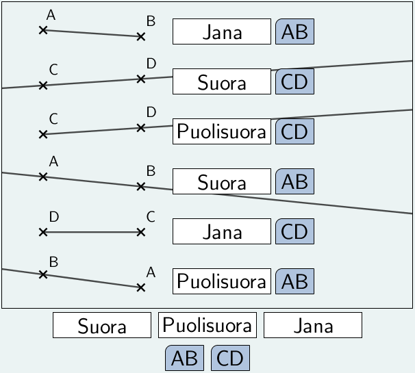
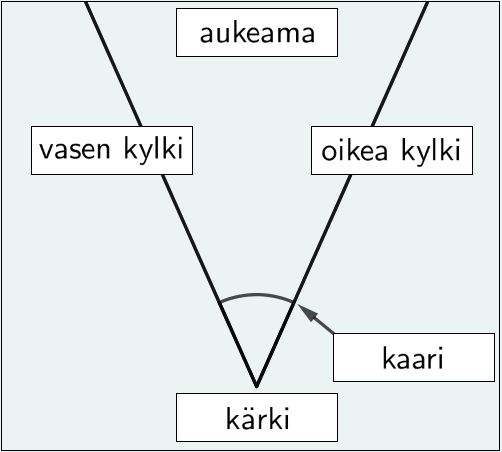
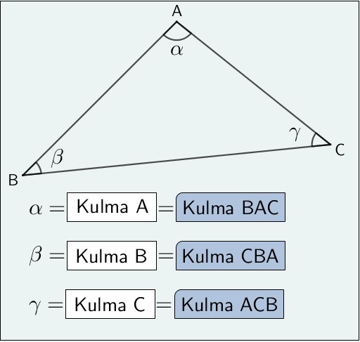
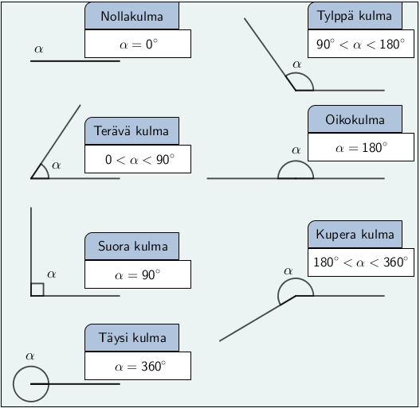

MA7 Jakso 4: Malliratkaisut
1. Koordinaatisto ja piste
Tehtävä 1.1: Koordinaatistolämmittely
Kysymys 1 (Vedä kohde kuvan päälle)

Kysymys 2 (Vedä kohde kuvan päälle)

Kysymys 3 (Vedä kohde kuvan päälle)

Tehtävä 1.4: Koordinaatiston piirto
Piirrä koordinaatisto, ja merkitse siihen seuraavat pisteet:
\(\mathsf{A = (-4, 3)}\)
\(\mathsf{B = (-2, 0)}\)
\(\mathsf{C = (2, 2)}\)
\(\mathsf{D = (0, -3)}\)
\(\mathsf{E = (3, -4)}\)
\(\mathsf{F = (5, 0)}\)
\(\mathsf{G = (-3, -2)}\)
\(\mathsf{H = (0, 2)}\)

Tehtävä 1.6: Koordinaatiston piirto
Piirrä koordinaatisto, ja merkitse siihen seuraavat pisteet:
\(\mathsf{A = (0, 5)}\)
\(\mathsf{B = (3, -1)}\)
\(\mathsf{C = (-1, 1)}\)
\(\mathsf{D = (1, -3)}\)
\(\mathsf{E = (3, 3)}\)
\(\mathsf{F = (-3, 0)}\)

Tehtävä 1.7: Käytännön koordinaatistoja (arvojen lukeminen)

Vastaa seuraaviin kysymyksiin yllä olevan koordinaatiston, ja siihen piirrettyjen pisteiden avulla.
a) Mikä on lumen syvyys, kun vuoden alusta on kulunut 15 päivää?
Vastaus: Lumen syvyys on 20 cm.
b) Mikä on lumen syvyys, kun vuoden alusta on kulunut 30 päivää?
Vastaus: Lumen syvyys on 40 cm.
c) Montako päivää vuoden alusta on kulunut, kun lumen syvyys on ollut tasan 10 cm?
Vastaus: Vuoden alusta on kulunut 10 päivää.
d) Montako päivää vuoden alusta on kulunut, kun lumen syvyys on saavuttanut suurimman arvonsa?
Vastaus: Vuoden alusta on kulunut 52 päivää.
e) Kuinka monta päivää lumen syvyys oli yli 36 cm?
Vastaus: Lumen syvyys oli yli 36 cm 29 päivän ajan.
f) Kuinka monta senttimetriä lumen syvyys väheni 57. päivän ja 84. päivän välillä?
Vastaus: Lumen syvyys väheni 15 cm.
2. Erilaisia viivoja
Tehtävä 2.1: Viivalämmittely
Kysymys 1 (Aukkotehtävä)
- Viiva
- Äärettömän ohut ja äärettömän tiheä peräkkäisten pisteiden muodostama jono.
- Suora
- Äärettömän pitkä suora viiva, joka nimetään kauttakulkupisteidensä avulla.
- Puolisuora
- Äärettömän pitkä suora viiva, joka on rajoitettu toisesta päästä. Nimetään alkupisteen ja kauttakulkupisteen avulla.
- Jana
- Kahden pisteen välinen suora viiva.
- Yhdensuuntainen
- Kaksi suoraa, jotka eivät koskaan leikkaa toisiaan.
- Kohtisuora
- Kaksi suoraa, jotka leikkaavat toisensa \(\mathsf{90\deg}\) kulmassa.
Kysymys 2 (Vedä kohde kuvan päälle)
Tehtävä 2.2: Viivat koordinaatistossa
a) Piirrä koordinaatisto, ja merkitse siihen seuraavat pisteet:
\(\mathsf{A = (-4, 1)}\)
\(\mathsf{B = (2, 2)}\)
\(\mathsf{C = (1, 0)}\)
\(\mathsf{D = (0, 3)}\)
\(\mathsf{E = (-3, -2)}\)
\(\mathsf{F = (3, -4)}\)
b) Piirrä a-kohdan koordinaatistoon
\(\textsf{Suora AD}\)
\(\textsf{Suora EF}\)
\(\textsf{Puolisuora BD}\)
\(\textsf{Puolisuora CF}\)
\(\textsf{Jana BC}\)
\(\textsf{Jana AE}\)

Tehtävä 2.3: Janat koordinaatistossa
Piirrä tehtävän 1.4 koordinaatistoon seuraavat janat
\(\textsf{Jana AH}\)
\(\textsf{Jana CF}\)
\(\textsf{Jana BG}\)
\(\textsf{Jana DE}\)
\(\textsf{Jana AB}\)
\(\textsf{Jana EF}\)
\(\textsf{Jana CH}\)
\(\textsf{Jana DG}\)

Tehtävä 2.4: Suorien leikkauspisteet
a) Piirrä koordinaatisto, ja siihen suora \(\textsf{s}\), joka kulkee pisteiden \(\mathsf{A = (-1, 4)}\) ja \(\mathsf{B = (3, -4)}\) kautta.

b) Missä pisteissä suora leikkaa koordinaattiakselit?
Suoran s ja x-akselin leikkaupiste: \(\mathsf{(1,0)}\)
Suoran s ja y-akselin leikkaupiste: \(\mathsf{(0,2)}\)
c) Piirrä samaan koordinaatistoon suora \(\textsf{k}\), joka kulkee origon ja pisteen \(\mathsf{C = (-3,3)}\) kautta.
d) Missä pisteessä suorat \(\textsf{s}\) ja \(\textsf{k}\) leikkaavat toisensa?
Suorien s ja k leikkauspiste: \(\mathsf{(2,-2)}\)
Tehtävä 2.5: Viivat koordinaatistossa
Piirrä tehtävän 1.6 koordinaatistoon
a) suora s, joka kulkee pisteiden A ja B kautta
b) suora k, joka kulkee pisteiden C ja D kautta
c) suora n, joka kulkee pisteiden E ja F kautta
d) suora p, joka kulkee pisteiden B ja D kautta

e) Miten suorat s ja k ovat toisiinsa nähden?
Suorat s ja k ovat yhdensuuntaisia.
f) Miten suorat s ja n ovat toisiinsa nähden?
Suorat s ja n ovat kohtisuorassa toisiaan vastaan.
Tehtävä 2.6: Yhdensuuntaisen suoran piirtäminen
a) Piirrä suora \(\textsf{r}\), joka on yhdensuuntainen suoran \(\textsf{s}\) kanssa, ja kulkee pisteen \(\textsf{A}\) kautta.
b) Piirrä suora \(\textsf{p}\), joka on yhdensuuntainen suoran \(\textsf{t}\) kanssa, ja kulkee pisteen \(\textsf{B}\) kautta.
c) Piirrä suora \(\textsf{q}\), joka on yhdensuuntainen suoran \(\textsf{k}\) kanssa, ja kulkee pisteen \(\textsf{C}\) kautta.

Tehtävä 2.7: Normaalin piirtäminen
a) Piirrä suora \(\textsf{n}\), joka kulkee pisteen \(\textsf{A}\) kautta, ja on suoran \(\textsf{s}\) normaali.
b) Piirrä suora \(\textsf{m}\), joka kulkee pisteen \(\textsf{B}\) kautta, ja on suoran \(\textsf{t}\) normaali.
c) Piirrä suora \(\textsf{f}\), joka kulkee pisteen \(\textsf{C}\) kautta, ja on suoran \(\textsf{k}\) normaali.

Tehtävä 2.8: Viivat koordinaatistossa
Piirrä koordinaatisto.
a) Piirrä suora \(\textsf{s}\), joka kulkee pisteiden \(\mathsf{A = (-3, 5)}\) ja \(\mathsf{B = (1, 3)}\) kautta.
b) Piirrä suora \(\textsf{n}\), joka kulkee pisteen \(\mathsf{C = (-2, 0)}\) kautta, ja on suoran \(\mathsf{s}\) normaali.
d) Piirrä suora \(\textsf{t}\), joka kulkee pisteen \(\mathsf{C}\) kautta, ja on suoran \(\mathsf{s}\) kanssa yhdensuuntainen.
f) Piirrä suora \(\textsf{m}\), joka kulkee pisteen \(\mathsf{D = (2, -5)}\) kautta, ja on suoran \(\mathsf{t}\) normaali.

c) Missä pisteessä suora \(\textsf{n}\) leikkaa y-akselin?
Suora n leikkaa y-akselin pisteessä \(\mathsf{0,4)}\)
e) Missä pisteessä suora \(\textsf{t}\) leikkaa y-akselin?
Suora t leikkaa y-akselin pisteessä \(\mathsf{0,-1)}\)
g) Missä pisteessä suora \(\textsf{m}\) leikkaa suoran \(\textsf{s}\)?
Suora m leikkaa suoran s pisteessä \(\mathsf{5,1)}\)
Tehtävä 2.9: Pisteen etäisyys suorasta
Mittaa pisteen A etäisyys suorasta

Tarkistuskenttä hyväksyy 1 mm virheen.
Tehtävä 2.10: Muuttujalauseke koordinaatistossa
Tehtävä 2.11: Suoran piirtäminen taulukoinnin avulla
Tehtävä 2.12: Kulmakertoimen ja vakiotermin määrittäminen
Tehtävä 2.13: Suoran piirtäminen kulmakertoimen avulla
3. Kulma
Tehtävä 3.1: Kulmalämmittely
Kysymys 1 (Vedä kohde kuvan päälle)
Kysymys 2 (Vedä kohde kuvan päälle)
Kysymys 3 (Vedä kohde kuvan päälle)
Tehtävä 3.5: Suorien välinen kulma
Piirrä koordinaatisto.
a) Piirrä suora \(\textsf{s}\), joka kulkee pisteiden \(\mathsf{A = (-3, 5)}\) ja \(\mathsf{B = (2, 0)}\) kautta.
b) Piirrä suora \(\textsf{k}\), joka kulkee pisteen \(\mathsf{C = (-5, -1)}\) kautta ja \(\mathsf{D = (5, 5)}\) kautta.
d) Suorat muodostavat leikkauspisteen ympärille neljä kulmaa. Mittaa kulmien suuruudet.

c) Mikä on suorien leikkauspiste?
Suorien leikkauspiste on \(\mathsf{(0, 2)}\).
e) Mitä erikoista huomaat?
Suorien leikkauspisteen ympärille muodostuneista kulmista toisiaan vastassa olevat kulmat (ristikulmat) ovat yhtä suuret.
Tehtävä 3.7: Kulmalaskuja

Laske kulmien \(\alpha\), \(\beta\), \(\gamma\) ja \(\delta\) arvot.
α, suora kulma ja 52° kulma muodostavat yhdessä oikokulman.
\(\alpha = \mathsf{180^\circ - 90^\circ - 52^\circ = 38^\circ}\)
Kaksi β:a ja 64° kulma muodostavat yhdessä oikokulman.
\(\beta = \mathsf{\dfrac{180^\circ - 64^\circ}{2} = 58^\circ}\)
γ ja 48° kulma ovat 147° kulman ristikulma.
\(\gamma = \mathsf{147^\circ - 48^\circ = 99^\circ}\)
δ ja 147° kulma muodostavat yhdessä oikokulman.
\(\delta = \mathsf{180^\circ - 147^\circ = 33^\circ}\)
Tehtävä 3.8: Suorien välinen kulma
Suorien välinen kulma on niiden leikkauspisteeseen muodostuvista kulmista pienempi. Mittaa suorien
a) s ja p välinen kulma.
∢(s,p) = 71°
b) p ja t välinen kulma.
∢(p,t) = 90°
c) s ja k välinen kulma.
∢(s,k) = 82°
d) k ja t välinen kulma.
∢(k,t) = 63°

Tehtävä 3.9: Suorien välinen kulma
a) Piirrä kaksi keskenään yhdensuuntaista suoraa.
b) Piirrä kolmas suora, joka leikkaa molempia a-kohdassa piirrettyjä suoria. Suora ei saa olla kohtisuorassa aiempia suoria vastaan.
c) Mittaa molempien leikkauspisteiden ympärille muodostuneet neljä kulmaa.
d) Mitä erikoista huomaat?
Samankohtaiset kulmat ovat yhtä suuret.

Tehtävä 3.10: Samankohtaiset kulmat
a) Laske kulmien \(\alpha\), \(\beta\), \(\gamma\) ja \(\delta\) suuruudet, kun suorat \(\textsf{k}\) ja \(\textsf{t}\) ovat yhdensuuntaiset.

\(\mathsf{\alpha = 115^\circ}\) (115° kulman kanssa samankohtainen kulma)
\(\mathsf{\beta = 180^\circ - 115^\circ = 65^\circ}\) (α:n vieruskulma)
\(\mathsf{\gamma = 65^\circ}\) (β:n ristikulma)
\(\mathsf{\delta = 115^\circ}\) (α:n ristikulma)
b) Ovatko suorat \(\textsf{k}\) ja \(\textsf{t}\) yhdensuuntaiset? Perustele.

Suorat k ja t eivät ole yhdensuuntaisia, koska 91° kulman samankohtainen kulma on 91° kulman vieruskulma eli 89°.
c) Laske kulmien \(\alpha\), \(\beta\), \(\gamma\) ja \(\delta\) suuruudet, kun suorat \(\textsf{s}\) ja \(\textsf{t}\) ovat yhdensuuntaiset.

\(\mathsf{\alpha = 61^\circ}\) (61° kulman ristikulma)
\(\mathsf{\beta = 180^\circ - 61^\circ - 73^\circ = 46^\circ}\) (α:n ja 73° kulman vieruskulma)
\(\mathsf{\gamma = 46^\circ}\) (samankohtainen kulma kuin β)
\(\mathsf{\delta = 73^\circ}\) (samankohtainen kulma 73° kulman ristikulman kanssa)
4. Kulman mittaaminen ja piirtäminen
Tehtävä 4.1: Kulman piirtäminen ja mittaaminen
Piirrä
a) terävä kulma
b) tylppä kulma
c) oikokulma
d) suora kulma
e) kupera kulma
f) täysi kulma.
h) Mittaa a-, b- ja e-kohdissa piirtämiesi kulmien suuruudet ja merkitse ne kuvaan.
Muista merkitä kulmaan kaari.

Tehtävä 4.2: Kulman piirtäminen
Piirrä kulma, jonka suuruus on
a) 25°
b) 134°
c) 45°
d) 90°
e) 115°
f) 200°
Muista merkitä kulman kaari ja kulman suuruus kuvaan.

Tehtävä 4.3: Kulman mittaaminen
a) α = 32°
b) β = 143°
c) γ = 188°
d) δ = 88°
e) ∢ABC = 58°
f) ∢VYK = 246°
g) ∢PQR = 115°

Tehtävä 4.5: Kulman mittaaminen
a) Piirrä koordinaatisto, ja siihen pisteet
\(\mathsf{A=(4,6)}\)
\(\mathsf{B=(-7,4)}\)
\(\mathsf{C=(-5,-1)}\)
\(\mathsf{D=(6,-4)}\)
\(\mathsf{O=(0,0)}\)
b) Piirrä puolisuorat \(\textsf{OA}\), \(\textsf{OB}\), \(\textsf{OC}\) ja \(\textsf{OD}\)
c) Mittaa kulma \(\sphericalangle\textsf{ AOB}\), ja luokittele se.
d) Mittaa kulma \(\sphericalangle\textsf{ BOC}\), ja luokittele se.
e) Mittaa kulma \(\sphericalangle\textsf{ COD}\), ja luokittele se.
f) Mittaa kulma \(\sphericalangle\textsf{ DOA}\), ja luokittele se.